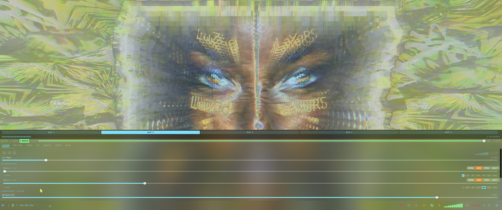
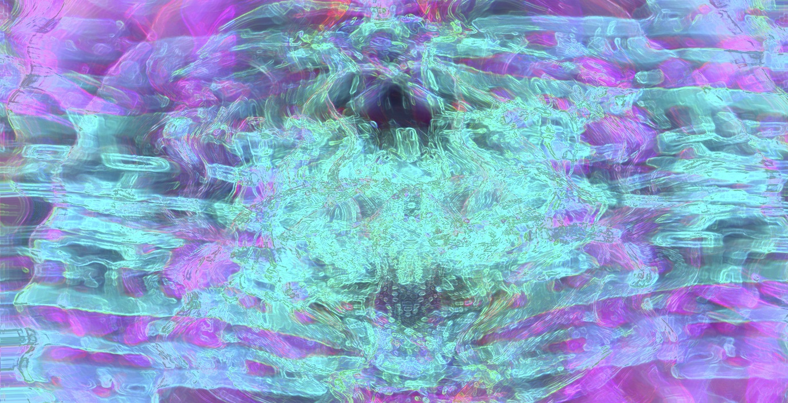
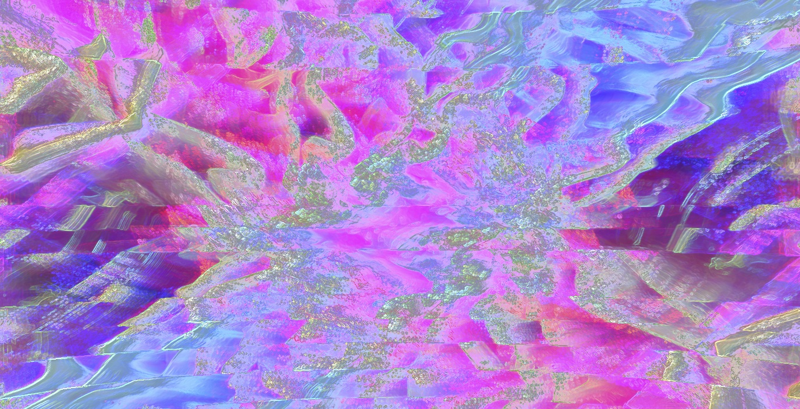
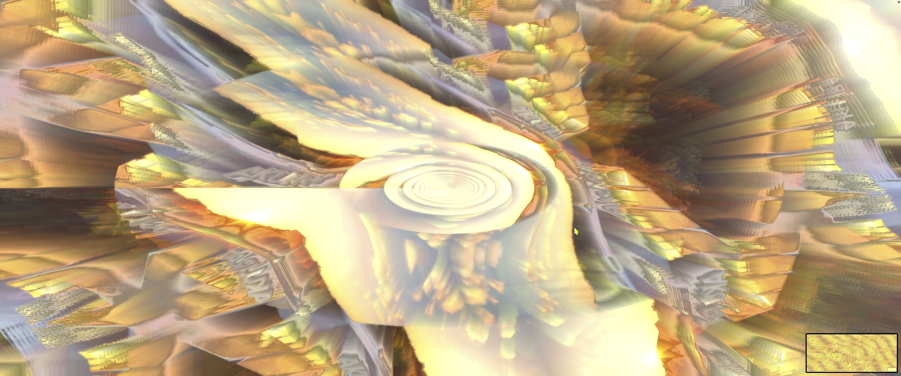
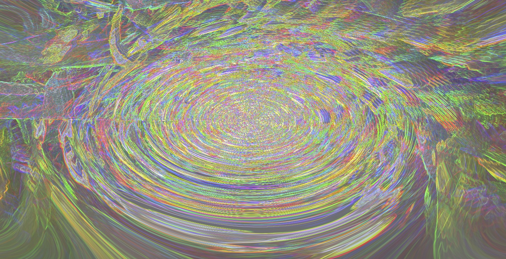
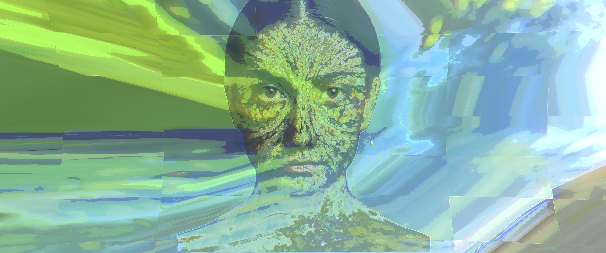

FuSioNWaRp verwandelt deine Videos und Bilder in Echtzeit in lebendige, audio-reaktive Welten.
Reine GPU-Engine. Jedes Erlebnis ist einzigartig — endlos, reaktiv, grenzenlos.

Ob Wohnzimmer-TV, Club-LED-Wall oder Festival-Stage — Visuals und Musik laufen aneinander vorbei. FuSioNWaRp bringt beides zusammen.
Nicht jeder zockt. Nicht jeder streamt.
Aber Musik läuft immer.
Transient-Detection erkennt jeden Kick. Zoom-Pulse, Tunnel-Sog, PumpTear — das Bild atmet mit dem Beat.
Das gesamte Spektrum wird in 16 Bänder zerlegt. Jedes Band steuert eigene Parameter — präzise, in Echtzeit.
Automatische Tempo-Erkennung. Effekte wechseln im Takt, Übergänge passieren exakt auf der Eins.
Friert die Welt fast ein. Nur ein feines Grundwabern bleibt — die Engine atmet mit der Musik.





Der vollständige Visual Synthesizer. Alle Engines, alle Effekte, kein Abo.
Bühnen- und Objekt-Mapping direkt aus FusionWarp. Kein extra Tool nötig.
macOS · Apple Silicon · einmalige Zahlung · kein Abo
50+ Effekte, 4 Layer, Blend-Modi — vollständig implementiert
KI-Gesichtserkennung, Live Face-Warp synchron zur Musik
BPM-Detection, Transient-Detection, Beat-Phase — Echtzeit
Launch Control XL, vollständiges MIDI-Mapping
macOS Screensaver — installierbar, Bilder-Ordner wählbar
Bühnen-Mapping Add-on — fertig und verfügbar
XY-Pads, Gyro, Beat-Steuerung vom iPhone aus
AirPlay-Output, standalone ohne Mac
Ob Investor, Club-Betreiber, DJ oder Festival-Veranstalter — wir freuen uns auf spannende Gespräche.
andreas.deflorin@luzidlayers.de